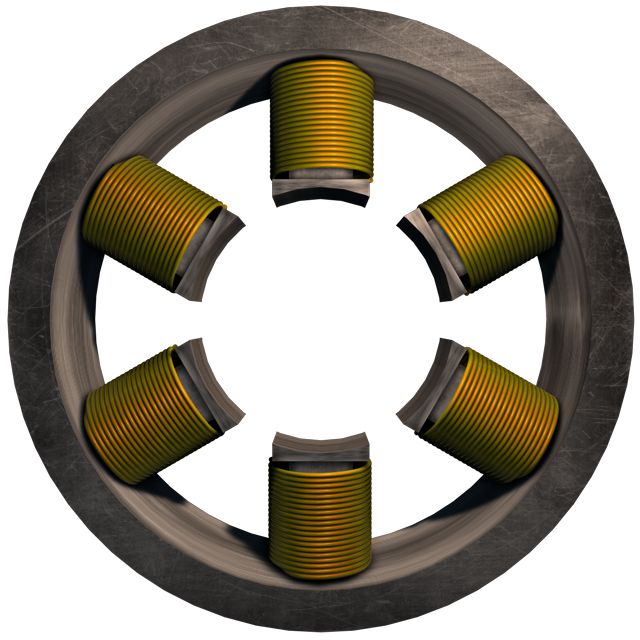

In 1900 Tesla tried to make a tower which could send signals to the whole world. Thus he wanted to create a worldwide communication grid. He had 150 000 dollar capital obtained from JP Morgan. The project failed because it wasn't financially profitable so Morgan withdrew from it. Tesla then continued with his other projects that were generally not realized due to lack of funds so most of his projects remained in his notebooks. Tesla was supposed to get the Nobel Prize in 1915, but he rejected it because he was supposed to share it with Edison. In the end, it was not assigned to either one. Although he didn't get the Nobel Prize, in 1917 he got The Edison Medal, the highest honor that could be given by the American Institute of Electrical Engineering. 